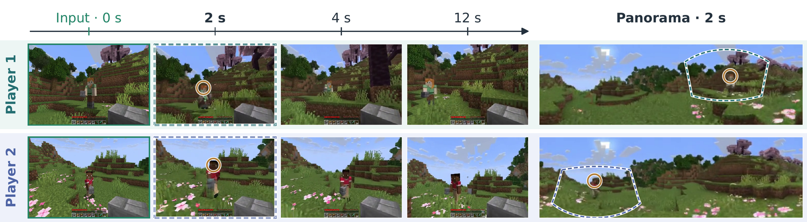
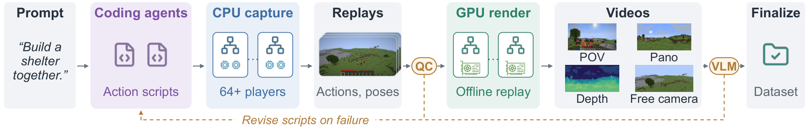
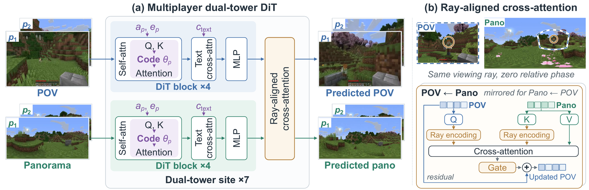

12 s rollouts, both four-step: Gamma-World (Distilled), which has no panoramic output, and PAWA (Distilled) with its panoramas below. Episodes were chosen for players who see each other, so they are not representative samples. Episode A is the paper's Figure 1 case.
TL;DR
- Dataset: synchronized POV and world-stabilized panoramic videos with aligned actions for interacting Minecraft players, from a CPU-capture / GPU-render pipeline that scales beyond 64 players.
- Model: dual POV and panorama towers joined by ray-aligned cross-attention, with quadratic-phase player codes that give m2 identities instead of m+1.
- Results: better POV prediction than Gamma-World, Solaris and MultiWorld, plus high-fidelity panoramas, from 2 to 16 players.
Abstract
A multiplayer world model must predict how the independent actions of several players change a shared environment, including changes outside a player's current field of view. A point-of-view (POV) video observes such changes only after they enter the camera, whereas panoramic video records the surroundings in every viewing direction and has served as an intermediate representation of the world state in recent world models. Learning this task therefore calls for synchronized POV and panoramic videos of interacting players together with their actions, yet no existing dataset provides this combination in Minecraft, an established testbed in which players act independently in a shared, modifiable 3D world. We present PAWA, a dataset and framework for action-conditioned panoramic multiplayer world modeling. The dataset pairs each player's POV video with world-stabilized panoramic video and aligned actions. Its distributed pipeline decouples CPU gameplay capture from GPU rendering, scales beyond 64 simultaneous players, and re-renders each recorded session under new observation configurations without replaying the gameplay. On this dataset, we develop a dual-tower model that jointly predicts POV and panoramic video and couples the two streams through cross-attention that aligns tokens observing the same direction in a shared world frame. We further introduce a quadratic-phase player encoding that distinguishes many more players than existing rotary codes at the same embedding dimension. Experiments show that PAWA outperforms state-of-the-art multiplayer world models in POV prediction quality while also producing high-fidelity panoramic predictions. We will release the dataset and collection pipeline to support further research on multiplayer world models.
Dataset

Model

Episode A across PAWA configurations: the causal model at four steps, PAWA (Causal) at 35 steps, PAWA (Distilled) at four, and the reference.
Experiments
Models and baselines. We evaluate PAWA (Causal), sampled with 35 steps, and PAWA (Distilled), sampled with four steps per causal block. The baselines are the bidirectional, causal and distilled variants of Gamma-World, Solaris, and MultiWorld, which runs its official 50-step autoregressive sampler with Minecraft controls mapped to its action space. Each baseline receives the initial POV observations, and PAWA additionally receives the initial panoramas defined by its task.
Protocol. The main comparison uses 30 two-player interaction episodes of 12 seconds at 20 Hz, and separate sets of 12 episodes cover four, eight and sixteen players. All evaluation episodes are absent from the final training split.
Metrics. PSNR uses pixel MSE over each player's 239-frame forecast window, while SSIM and LPIPS average the forecast frames. These metrics are averaged first across players within each episode and then equally across episodes. FID pools all forecast frames, and FVD pools I3D features of 16-frame clips.
Comparison with multiplayer world models
All models on the same episode, synchronized; the reference closes the grid. Episodes A–E are those above, F is another episode with co-players in view, and G has the largest POV LPIPS increase from distillation. Models keep their native resolution and preprocessing.
In the two-player results of Table 1, PAWA (Causal) achieves the best POV scores on four of the five metrics and PAWA (Distilled) the best FID, and both variants thus surpass every baseline on every POV metric. Against the strongest baseline, Gamma-World (Bidirectional), PAWA (Causal) lowers POV FVD from 267.1 to 120.1 and LPIPS from 0.567 to 0.421, and with the same four-step budget as Gamma-World (Distilled), PAWA (Distilled) reaches POV FVD 138.1 against 279.7. The panoramic predictions reach LPIPS 0.223 and 20.41 dB PSNR. The advantage persists with four players, where PAWA (Causal) reduces POV FVD from 323.6 for the best Gamma-World variant to 138.0. Co-players re-entering a view after at least one second outside it reach LPIPS 0.58 against 0.65 for the best baseline, and the panorama forecasts co-players outside the POV as reliably as those inside it. A VLM judge further finds that PAWA shows players where none exist on 6% of the frames against 16% for Gamma-World (Distilled).
| Model | Stream | FVD↓ | FID↓ | LPIPS↓ | PSNR↑ | SSIM↑ |
|---|---|---|---|---|---|---|
| Gamma-World (Bidirectional) | POV | 267.1 | 56.63 | 0.567 | 13.08 | 0.478 |
| Gamma-World (Causal) | POV | 306.7 | 52.00 | 0.606 | 12.46 | 0.451 |
| Gamma-World (Distilled) | POV | 279.7 | 58.36 | 0.584 | 11.83 | 0.431 |
| Solaris | POV | 614.9 | 77.31 | 0.634 | 10.42 | 0.447 |
| MultiWorld | POV | 771.2 | 186.06 | 0.667 | 11.76 | 0.395 |
| PAWA (Causal) | POV | 120.1 | 30.80 | 0.421 | 16.86 | 0.562 |
| PAWA (Distilled) | POV | 138.1 | 28.40 | 0.465 | 15.38 | 0.516 |
| PAWA (Causal) | PANO | 88.0 | 26.53 | 0.223 | 20.41 | 0.643 |
| PAWA (Distilled) | PANO | 98.1 | 28.26 | 0.243 | 19.77 | 0.617 |
Low-motion tier (12 episodes)
| Model | Stream | FVD↓ | FID↓ | LPIPS↓ | PSNR↑ | SSIM↑ |
|---|---|---|---|---|---|---|
| Gamma-World (Bidirectional) | POV | 333.4 | 67.25 | 0.557 | 12.87 | 0.453 |
| Gamma-World (Causal) | POV | 323.7 | 70.16 | 0.572 | 13.16 | 0.435 |
| Gamma-World (Distilled) | POV | 340.1 | 69.14 | 0.551 | 12.98 | 0.416 |
| Solaris | POV | 482.7 | 79.50 | 0.593 | 11.49 | 0.429 |
| MultiWorld | POV | 715.8 | 185.33 | 0.642 | 12.68 | 0.381 |
| PAWA (Causal) | POV | 157.0 | 41.61 | 0.380 | 16.95 | 0.546 |
| PAWA (Distilled) | POV | 175.0 | 46.18 | 0.437 | 15.80 | 0.502 |
| PAWA (Causal) | PANO | 158.8 | 35.91 | 0.209 | 20.75 | 0.653 |
| PAWA (Distilled) | PANO | 166.5 | 37.72 | 0.226 | 20.08 | 0.623 |
Co-player re-entry (LPIPS)
| Players | Events | PAWA | Best baseline | Static | PAWA − best | Relative to in-view |
|---|---|---|---|---|---|---|
| 2 | 48 | 0.582 | 0.654 | 0.635 | −0.071 [−0.116, −0.023] | +0.011 [−0.033, 0.061] |
| 4 | 111 | 0.603 | 0.649 | 0.647 | −0.046 [−0.076, −0.018] | +0.031 [−0.003, 0.063] |
| 8 | 505 | 0.649 | 0.710 | 0.688 | −0.061 [−0.081, −0.040] | −0.013 [−0.032, 0.007] |
VLM judgment of co-player re-entry
| Two players | Four players | |||||
|---|---|---|---|---|---|---|
| Model | Success↑ | Located↑ | Halluc.↓ | Success↑ | Located↑ | Halluc.↓ |
| Gamma-World (Bidirectional) | 0.25 | 0.13 | 0.05 | 0.05 | 0.00 | 0.00 |
| Gamma-World (Causal) | 0.20 | 0.10 | 0.09 | 0.14 | 0.12 | 0.14 |
| Gamma-World (Distilled) | 0.20 | 0.18 | 0.14 | 0.17 | 0.04 | 0.19 |
| Solaris | 0.15 | 0.07 | 0.15 | N/A | N/A | N/A |
| MultiWorld | 0.26 | 0.08 | 0.08 | N/A | N/A | N/A |
| PAWA (Causal) | 0.12 | 0.10 | 0.08 | 0.36 | 0.12 | 0.03 |
| PAWA (Distilled) | 0.26 | 0.19 | 0.03 | 0.21 | 0.10 | 0.08 |
Scaling the player population
The evaluated Gamma-World configuration provides at most four player codes, whereas the quadratic-phase codebook of PAWA assigns a distinct identity to every player of larger sessions. With eight and sixteen players, which only PAWA supports among the evaluated models, the distilled model obtains POV FVD scores of 141.3 and 116.7, respectively. Scenarios and pool sizes differ across populations, and comparisons are therefore made within each population. Each stream also stays bound to its own actions, since at sixteen players the own commands of 73% of the players best explain the rotation of their stream, against 6% by chance.
Every player's POV and panorama, reference last. 4 players: the paper's four-player figure case, with Gamma-World (Distilled). 8 and 16 players: lower-median episodes by PAWA (Distilled) POV LPIPS.
| Players | Model | Stream | FVD↓ | FID↓ | LPIPS↓ | PSNR↑ | SSIM↑ |
|---|---|---|---|---|---|---|---|
| 4 | Gamma-World (Bidirectional) | POV | 752.3 | 142.95 | 0.633 | 13.34 | 0.487 |
| Gamma-World (Causal) | POV | 373.0 | 57.02 | 0.587 | 13.06 | 0.465 | |
| Gamma-World (Distilled) | POV | 323.6 | 56.65 | 0.577 | 12.39 | 0.440 | |
| PAWA (Causal) | POV | 138.0 | 33.49 | 0.427 | 16.41 | 0.550 | |
| PAWA (Distilled) | POV | 167.3 | 33.86 | 0.481 | 15.08 | 0.506 | |
| PAWA (Causal) | PANO | 161.9 | 32.79 | 0.254 | 19.08 | 0.630 | |
| PAWA (Distilled) | PANO | 194.1 | 32.94 | 0.264 | 18.67 | 0.619 | |
| 8 | PAWA (Causal) | POV | 111.5 | 32.32 | 0.458 | 15.06 | 0.536 |
| PAWA (Distilled) | POV | 141.3 | 28.90 | 0.517 | 13.71 | 0.494 | |
| PAWA (Causal) | PANO | 127.9 | 27.42 | 0.294 | 17.31 | 0.591 | |
| PAWA (Distilled) | PANO | 135.6 | 29.52 | 0.301 | 16.72 | 0.577 | |
| 16 | PAWA (Causal) | POV | 92.2 | 28.39 | 0.467 | 15.50 | 0.554 |
| PAWA (Distilled) | POV | 116.7 | 23.96 | 0.520 | 14.15 | 0.511 | |
| PAWA (Causal) | PANO | 93.6 | 23.65 | 0.333 | 16.87 | 0.570 | |
| PAWA (Distilled) | PANO | 92.5 | 20.95 | 0.333 | 16.66 | 0.567 |
Action following and control binding
| Yaw correlation / error | 2 players, easy | 2 players, hard | 4 players | 8 players | 16 players |
|---|---|---|---|---|---|
| Reference | 0.910 | 0.888 | 0.901 | 0.872 | 0.801 |
| PAWA (Causal) | 0.839 / 2.1 | 0.849 / 4.8 | 0.832 / 4.8 | 0.847 / 5.3 | 0.793 / 6.8 |
| PAWA (Distilled) | 0.702 / 3.2 | 0.811 / 5.8 | 0.804 / 5.4 | 0.770 / 6.7 | 0.719 / 7.8 |
| Gamma-World (Distilled) | 0.758 / 3.7 | 0.772 / 8.4 | 0.771 / 7.8 | 0.798 / 8.0 | N/A |
| Gamma-World (Bidirectional) | 0.590 | 0.706 | 0.370 | 0.144 | N/A |
| Solaris | 0.533 | 0.640 | N/A | N/A | N/A |
| Control binding | 2 players (0.50) | 4 players (0.26) | 8 players (0.13) | 16 players (0.06) | |
| Reference | 0.98 | 0.98 | 0.96 | 0.86 | |
| PAWA (Causal) | 0.95 | 0.98 | 0.92 | 0.83 | |
| PAWA (Distilled) | 0.93 | 0.94 | 0.90 | 0.73 | |
| Gamma-World (Distilled) | 1.00 | 1.00 | 0.94 | N/A | |
| Gamma-World (Bidirectional) | 0.95 | 0.56 | 0.13 | N/A |
Analysis
Ray-aligned cross-attention. Disabling all seven cross-attention sites of PAWA (Distilled) at inference, with fixed weights, episodes, recorded noise and sampler, raises POV FVD from 138.1 to 179.0 and LPIPS from 0.465 to 0.510, while the panoramic scores change little. Removing only the pano→POV direction accounts for the entire loss, and early and late sites contribute comparably. The POV prediction thus draws on the panoramic context.
PAWA (Distilled) with and without its cross-attention sites, then the reference. Letters match the comparison above.
| Stream | Cross-attention sites | FVD↓ | FID↓ | LPIPS↓ | PSNR↑ | SSIM↑ |
|---|---|---|---|---|---|---|
| POV | Enabled | 138.1 | 28.40 | 0.4648 | 15.382 | 0.5157 |
| POV | Disabled | 179.0 | 37.71 | 0.5096 | 14.749 | 0.5094 |
| Panorama | Enabled | 98.1 | 28.26 | 0.2425 | 19.765 | 0.6172 |
| Panorama | Disabled | 104.0 | 28.42 | 0.2444 | 19.645 | 0.6142 |
Removing each cross-attention direction and site
| Removed | POV FVD↓ | POV FID↓ | POV LPIPS↓ | POV PSNR↑ | POV SSIM↑ | Pano FVD↓ | Pano LPIPS↓ |
|---|---|---|---|---|---|---|---|
| None | 135.2 | 27.65 | 0.458 | 15.72 | 0.523 | 98.2 | 0.243 |
| All sites | 171.2 | 37.69 | 0.510 | 14.63 | 0.504 | 106.2 | 0.245 |
| Pano→POV only | 171.2 | 37.69 | 0.510 | 14.63 | 0.504 | 99.4 | 0.242 |
| POV→pano only | 139.0 | 28.51 | 0.466 | 15.39 | 0.515 | 106.2 | 0.245 |
| Early sites | 145.5 | 31.52 | 0.481 | 15.14 | 0.512 | 95.3 | 0.242 |
| Late sites | 142.0 | 30.26 | 0.483 | 15.17 | 0.513 | 104.2 | 0.244 |
Learned ray alignment. At the late cross-attention sites, POV queries place up to 46% of their attention on the panorama inside their own frustum, against 10% for uniform attention, and the most attended key lies a median of 7° from the query ray. Re-initialized sites stay at chance under the same ray encoding, and the cross-attention therefore learns to connect matching directions.
| Model | Site | Angle↓ | Frustum mass↑ | Mass within 15°↑ | Argmax error↓ |
|---|---|---|---|---|---|
| PAWA (Distilled) | 3 | 68° | 0.27 | 0.087 | 22° |
| 19 | 51° | 0.43 | 0.25 | 9° | |
| 23 | 50° | 0.46 | 0.29 | 7° | |
| 27 | 65° | 0.28 | 0.16 | 24° | |
| PAWA (Causal) | 3 | 74° | 0.22 | 0.063 | 31° |
| 19 | 47° | 0.47 | 0.29 | 8° | |
| 23 | 38° | 0.57 | 0.43 | 5° | |
| 27 | 55° | 0.36 | 0.25 | 12° | |
| Control, re-initialized sites | all | 90° | 0.10 | 0.011 | ≈90° |
| Chance | all | 90° | 0.10 | 0.012 | ≈90° |